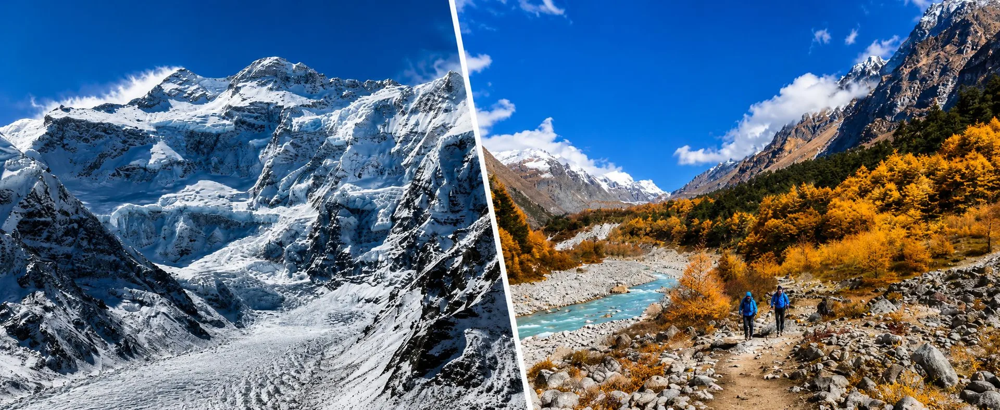
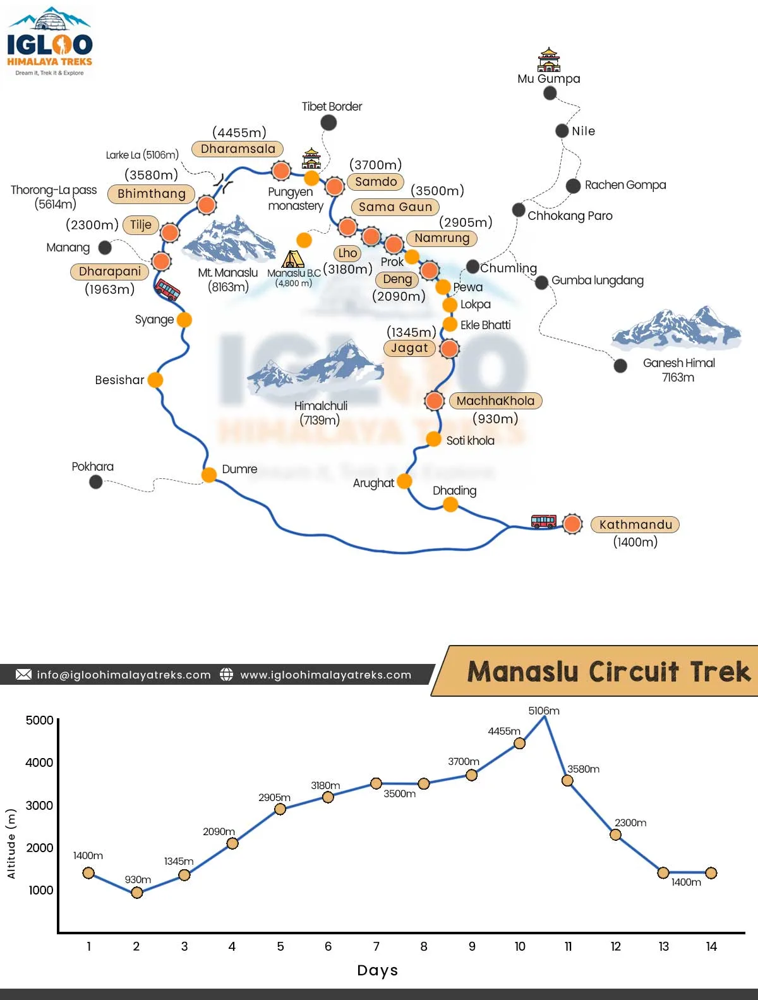
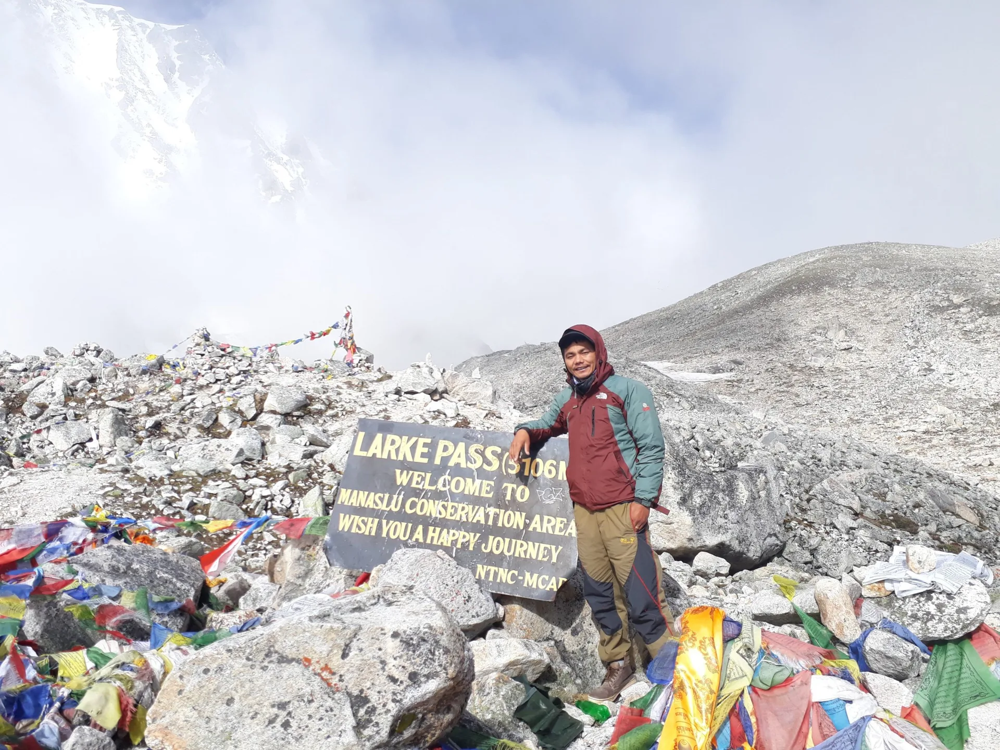
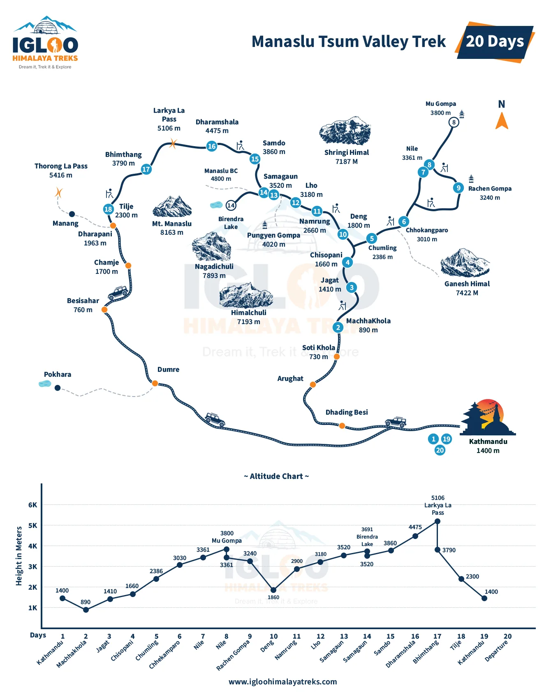

1. The Regulatory Framework: Why the Manaslu Circuit is a Strictly Restricted Himalayan Zone
Encircling Mount Manaslu (8,163m / 26,781ft)—the eighth-highest mountain on Earth—the Manaslu Circuit is universally celebrated as the premier wilderness alternative to the commercialized Annapurna Circuit. However, unlike the Annapurna or Everest regions where independent trekking has historically been accessible, Manaslu is officially classified by the Government of Nepal as a Restricted Area.
The upper reaches of the Budi Gandaki valley (Nubri and Tsum) border the sensitive Tibetan Autonomous Region of China across open high-altitude mountain passes. Until 1991, foreign visitors were completely barred from entering the region to protect national security, unmapped border zones, and delicate Tibetan Buddhist tribal culture. When the Nepal Department of Immigration finally opened the valley to controlled ecotourism in 1992, it instituted strict legal protocols: quota monitoring, mandatory registered agency escorts, and specialized Restricted Area Permits (RAP).
In 2026, traveling to Manaslu requires securing three separate official government permits. Independent, unguided, or solo trekking without an authorized agency is strictly illegal under Nepalese immigration law.
2. The 3 Mandatory Permits for Manaslu Circuit (Plus Tsum Valley Extension)

To complete the classic 14-day Manaslu Circuit, every foreign national must possess three distinct paper permits before departing Kathmandu. If you choose to add the sacred Tsum Valley extension, a fourth specialized permit is required:
| Permit Name | Issuing Authority | Cost (Autumn: Sep–Nov) | Cost (Spring: Dec–Aug) | Required Coverage Area |
|---|---|---|---|---|
| 1. Manaslu Restricted Area Permit (MRAP) | Department of Immigration (Kathmandu) | $100 USD / week (+$15 USD per extra day) |
$75 USD / week (+$10 USD per extra day) |
Jagat checkpoint to Dharapani exit (Mandatory). |
| 2. Manaslu Conservation Area Project (MCAP) | National Trust for Nature Conservation (NTNC) | NPR 3,000 (~$23 USD) (SAARC: NPR 1,000) |
NPR 3,000 (~$23 USD) (SAARC: NPR 1,000) |
Covers entry from Philim to Larkya La Pass (Mandatory). |
| 3. Annapurna Conservation Area Project (ACAP) | National Trust for Nature Conservation (NTNC) | NPR 3,000 (~$23 USD) (SAARC: NPR 1,000) |
NPR 3,000 (~$23 USD) (SAARC: NPR 1,000) |
Covers exit from Larkya La through Bimthang to Dharapani (Mandatory). |
| 4. Tsum Valley Restricted Permit (TSUM RAP) (Optional Extension) |
Department of Immigration (Kathmandu) | $40 USD / week (+$7 USD per extra day) |
$30 USD / week (+$7 USD per extra day) |
Required only if adding Tsum Valley (Lokpa to Mu Gompa). |
3. Manaslu Restricted Area Permit (MRAP) Breakdown: Autumn vs. Spring Pricing & 7-Day Calculation
The Manaslu Restricted Area Permit (MRAP) is the primary and most expensive permit for the journey. Issued strictly by the Department of Immigration in Kathmandu, its fee structure changes depending on the season and the exact number of days spent inside the restricted corridor.
Where Does the Restricted Area Start and End?
The restricted zone does not start at the roadhead in Machha Khola. It officially begins at the police checkpoint in Jagat (1,340m / Day 3 of trekking) and terminates once you cross the 5,160m Larkya La Pass and reach the road junction at Dharapani (1,860m / Day 11 of trekking).
How the 7-Day Clock is Calculated
The base permit covers 7 full calendar days inside the restricted perimeter. Because most standard itineraries spend between 8 and 9 days traversing from Jagat to Dharapani, your permit must be issued with extra days:
Autumn Peak Season (Sep 1 to Nov 30)
Base Rate (First 7 Days): USD $100 per person.
Extra Days Rate: USD $15 per person per day.
Standard 8-Day Restricted Traversal: $100 + $15 = $115 USD per person.
Relaxed 9-Day Restricted Traversal: $100 + $30 = $130 USD per person.
Spring & Off-Peak Season (Dec 1 to Aug 31)
Base Rate (First 7 Days): USD $75 per person.
Extra Days Rate: USD $10 per person per day.
Standard 8-Day Restricted Traversal: $75 + $10 = $85 USD per person.
Relaxed 9-Day Restricted Traversal: $75 + $20 = $95 USD per person.
The Inexpensive "Insurance" Day
We always recommend booking your MRAP permit with at least one additional buffer day (an extra $10 to $15). If high-altitude fatigue or snowfall at Samagaon delays your push over Larkya La Pass, having that extra day stamped on your permit avoids stressful permit violation penalties at the Dharapani exit checkpoint.
4. Conservation Area Permits: MCAP and ACAP Explained (Why You Need ACAP for Manaslu)

Trekkers often ask: "Why do I need to pay for an Annapurna Conservation Area Project (ACAP) permit if I am trekking the Manaslu Circuit?"
The answer lies in the geographical boundary lines of western Nepal’s national parks:
1. Manaslu Conservation Area Project (MCAP)
Managed by the National Trust for Nature Conservation (NTNC), the MCAP covers 1,663 square kilometers across the Gorkha district. It protects rare species like the snow leopard, musk deer, and red panda, while funding local trail maintenance, suspension bridges, and health posts. The permit costs NPR 3,000 (~$23 USD) for foreigners and is verified at the Philim checkpoint.
2. Annapurna Conservation Area Project (ACAP)
The Manaslu Circuit is not an out-and-back trek—it is a continuous horseshoe loop. When you cross the crest of Larkya La Pass (5,160m), you leave Gorkha District and cross directly into the Manang and Lamjung districts, which fall entirely within the protected boundaries of the Annapurna Conservation Area!
From the pass, you descend through Bimthang (3,720m) and Tilije (2,300m) to reach the major trail junction at Dharapani (1,860m), where you join the classic Annapurna Circuit route before boarding jeeps to Besisahar. Without a valid ACAP permit (NPR 3,000 / ~$23 USD), park rangers at Dharapani will stop your party and charge double the permit fee as a penalty!
5. The Non-Negotiable Legal Mandates: The Minimum 2-Trekker Rule & Licensed Guide Requirements
Under Nepalese immigration law, the Manaslu region is subject to strict entry conditions that cannot be bypassed. The Department of Immigration enforces two non-negotiable rules:
Mandate 1: The Minimum Two-Trekker Rule
The Department of Immigration software will never issue a Restricted Area Permit to an individual foreign trekker. The permit application must contain the verified passport credentials and visas of at least two foreign nationals hiking the exact same route concurrently.
What if you are a solo traveler? If you are traveling alone, you do not have to miss out on Manaslu. Registered agencies like Igloo Himalaya Treks regularly pair solo trekkers together on paperwork or place you into a small open group departing on your desired date. Both trekkers can walk at their own pace with their guide, but their permits are legally linked.
Mandate 2: Mandatory Certified Mountain Guide
Foreign trekkers are strictly prohibited from hiking unescorted. Every party must be accompanied from trailhead to exit by a government-certified, licensed Nepali trekking guide holding active credentials from the Nepal Academy of Tourism and Hotel Management (NATHM) and Trekking Agencies Association of Nepal (TAAN).
Your guide is legally responsible for your safety, carrying the physical permit documents, and stamping your group manifest at every police and military post along the Budi Gandaki valley.
6. The Myth of 'Ghost Permits': Why Fake Solo Bookings Risk Deportation & Blacklisting
Some unscrupulous, low-cost agencies attempt to lure solo trekkers by promising a "Ghost Permit"—submitting a permit application that pairs the solo traveler with an imaginary or recycled passport number belonging to someone who is not actually in the country.
This practice is completely illegal and carries catastrophic risks for the traveler:
- Physical Face-to-Passport Checkpoints: Unlike Annapurna or Everest, checkpoints in the Manaslu Restricted Area (particularly at Jagat, Philim, and Namrung) are staffed by vigilant armed police and immigration officials who physically inspect every trekker against the group photo roster.
- Immediate Expulsion: If the second person listed on your permit manifest is missing, your permit is revoked on the spot. You will be escorted off the mountain under armed guard, fined heavily, and deported back to Kathmandu.
- Search & Rescue Insurance Invalidation: Emergency helicopter evacuation companies verify your official immigration manifest before dispatching an aircraft. If your permit is fraudulent, insurance companies will refuse the claim, leaving you stranded with a $5,000+ personal rescue bill.
Always ensure your agency processes genuine, legally verified permits with real group members or paired companions.
7. Step-by-Step Permit Application Process: Kathmandu Immigration Timelines & Documents
Because restricted permits require physical immigration processing, they cannot be printed in advance by trekkers at home. Here is the exact step-by-step procedure:
Required Documents Checklist
Before your agency can file your permit paperwork at the Department of Immigration in Maitighar, Kathmandu, you must provide:
- Original Physical Passport: Must have at least 6 months of validity and a valid Nepal entry tourist visa stamp. (Digital scans or photocopies are not accepted for restricted permits).
- 4 Printed Passport Photographs: Standard passport size with a clean, light background (2 for MRAP, 1 for MCAP, 1 for ACAP).
- Agency Documentation: Your trekking agency's government license, tax registration, and formal guarantee letter.
- Travel Insurance Certificate: Policy documentation clearly confirming medical treatment and emergency helicopter evacuation up to 5,500m.
Application Timelines
Once you arrive in Kathmandu and hand your physical passport to your agency, processing takes one full business day. Applications submitted in the morning (10:00 AM) are typically ready for collection by 4:00 PM the same afternoon. Note: The Department of Immigration is closed on Saturdays and official public holidays.
8. Checkpoints Along the Trail: Where Permits Are Inspected (Jagat, Philim, Samagaon, Dharapani)

Throughout the 14-day circuit, your guide will present your physical permits and group manifest at multiple administrative checkpoints. Trekkers must carry their original passports in their daypack at all times.
| Checkpoint Station | Altitude | Managing Authority | Registration Protocol |
|---|---|---|---|
| 1. Soti Khola / Machha Khola | 900m | Nepal Police | Initial vehicle and trekker entry logging. |
| 2. Jagat | 1,340m | Department of Immigration & Nepal Police | Official Restricted Area Entry Gate: MRAP permits verified; passports inspected; start date stamped. |
| 3. Philim | 1,570m | MCAP / NTNC Ranger Post | Manaslu Conservation Area Permit (MCAP) entry registration. |
| 4. Deng & Namrung | 2,660m | Nepal Police Post | Safety manifest check as trekkers enter the high alpine Nubri valley. |
| 5. Samagaon | 3,530m | Nepal Police Post | Final high-altitude checkpoint before ascending Larkya La Pass. |
| 6. Dharapani | 1,860m | ACAP / Nepal Police Post | Official Restricted Area Exit Gate: MRAP exit recorded; ACAP permit stamped for onward travel to Besisahar. |
9. Tsum Valley Permit Extension Guide: Costs, Sacred Geography & Combined Logistics

Trekkers who wish to explore the mystical Tsum Valley (The Hidden Valley of Happiness / Beyul Kyimolung) must obtain an additional specialized Restricted Area Permit in addition to the standard Manaslu permits.
Tsum Valley branches eastward from the main trail above Philim (at Lokpa) and extends to the historic monasteries of Mu Gompa (3,700m) and Rachen Gompa near the Tibetan border:
- Autumn Rate (Sep–Nov): USD $40 per person for the first 7 days, plus USD $7 per day thereafter.
- Spring & Off-Peak Rate (Dec–Aug): USD $30 per person for the first 7 days, plus USD $7 per day thereafter.
- Combined 19 to 21-Day Itinerary: When combining Tsum Valley with the Manaslu Circuit, you need both the Tsum RAP and the Manaslu RAP (MRAP), alongside MCAP and ACAP. Your agency will stagger the start dates of each restricted permit so you do not pay double fees for overlapping days.
10. TIMS Card Clarification: Is a Trekkers' Information Management System Card Required?
A widespread point of confusion among international trekkers is whether they need to buy a Trekkers' Information Management System (TIMS) Card for the Manaslu Circuit.
The Official Answer: No.
Under official regulations from the Nepal Tourism Board (NTB) and Trekking Agencies Association of Nepal (TAAN), any trekker who holds a verified Department of Immigration Restricted Area Permit (RAP) is completely exempt from the TIMS card requirement. Because you already hold the government-issued MRAP, you do not need to purchase a TIMS card for Manaslu, saving you NPR 2,000 (~$15 USD) per person.
11. Children, Minors & SAARC Nationals: Discount Policies & Special Permit Rules
Government fee structures vary based on nationality and age:
SAARC Nationals (India, Bhutan, Bangladesh, etc.)
- Conservation Area Permits (MCAP & ACAP): Citizens of SAARC nations pay a significantly discounted rate of NPR 1,000 per permit (compared to NPR 3,000 for other foreign nationals).
- Restricted Area Permit (MRAP): The Department of Immigration does not offer discounts on restricted area fees for SAARC passport holders. Indian, Bangladeshi, and other SAARC citizens must pay the full international MRAP rate ($100 in Autumn, $75 in Spring).
Children and Minors
- Under 10 Years Old: Children under 10 years of age are completely exempt from MCAP and ACAP conservation permit fees.
- Restricted Area Registration: Even though minors may receive fee waivers on conservation permits, they must still be registered on the formal immigration manifest accompanying a parent or guardian.
12. Permit Validity, Extension Protocols & Weather Delays at Larkya La Pass

High mountain weather is inherently unpredictable. What happens if a severe autumn blizzard or sudden spring snowfall temporarily blocks the crossing over Larkya La Pass (5,160m), forcing your group to wait an extra 2 to 3 days in Samagaon or Dharamsala?
Permit Overstay Protocols
If extreme weather or altitude illness causes your Restricted Area Permit (MRAP) days to expire while you are stranded on the mountain, do not panic:
- Notify the Local Police Post: Your licensed guide will register the delay with the local police post in Samagaon or Samdo, logging the official weather obstacle in the village registry.
- Exit Registration at Dharapani: When the pass clears and you safely descend to Dharapani, the checkpoint official will note the overstay on your paperwork.
- Nominal Settlement in Kathmandu: Upon return to Kathmandu, your trekking agency will visit the Department of Immigration to settle the nominal daily rate ($10 to $15 per day) without penalizing or blacklisting the trekkers.
13. Cost Comparison Matrix: Manaslu Permits vs. Upper Mustang, Kanchenjunga & Dolpo RAP Fees
To put Manaslu’s permit costs into perspective, here is how its government fees compare against Nepal’s other premier restricted trekking sectors in 2026:
| Restricted Trekking Region | Restricted Permit (RAP) Fee | National Park / Conservation Fee | Total Permit Cost Per Person | Permit Value Assessment |
|---|---|---|---|---|
| Manaslu Circuit | $100 USD (Autumn) / $75 USD (Spring) for 7 days | NPR 3,000 (MCAP) + NPR 3,000 (ACAP) (~$46 USD) | ~$145 – $175 USD | Highest Value: Accessible pricing for an extraordinary 8,000m wilderness circuit. |
| Upper Mustang | $500 USD for the first 10 days (+$50/day thereafter) | NPR 3,000 (ACAP) (~$23 USD) | ~$523 USD | High Cost: Steep fixed entry fee to preserve the medieval walled kingdom. |
| Upper Dolpo | $500 USD for the first 10 days (+$50/day thereafter) | NPR 3,000 (Shey Phoksundo NP) (~$23 USD) | ~$523 USD | Premium Wilderness: Remote, high logistics and expensive permits. |
| Kanchenjunga | $20 USD per week for first 4 weeks (+$25/week thereafter) | NPR 3,000 (KCAP) (~$23 USD) | ~$83 – $103 USD | Budget-Friendly RAP: Low permit fees offset by remote domestic travel costs. |
| Nar Phu Valley | $100 USD (Autumn) / $75 USD (Spring) for 7 days | NPR 3,000 (ACAP) (~$23 USD) | ~$123 – $148 USD | Great Value: Hidden Tibetan valley branching off the Annapurna Circuit. |
14. Total Expedition Budgeting: How Permit Costs Fit Into Your Overall Manaslu Trek Package
Understanding permit costs allows you to budget accurately for your entire expedition. Government permits represent approximately 15% to 18% of the total cost of an all-inclusive 14-day Manaslu Circuit trek.
Typical Expense Distribution for 14-Day Manaslu Trek
- Mandatory Permits (MRAP + MCAP + ACAP): ~$145 to $175 USD per person.
- Licensed Mountain Guide & Porter Team: ~$500 to $650 USD (guide wages, porter wages, meals, lodge, insurance, and equipment).
- Private 4WD Jeep Transport: ~$250 to $350 USD (Kathmandu to Machha Khola and Besisahar back to Kathmandu).
- Teahouse Lodging & Full-Board Meals (3 meals/day): ~$350 to $450 USD.
- All-Inclusive Guided Package Price: Typically ranges between $1,050 and $1,450 USD per person (based on 2 trekkers sharing costs).
15. Pre-Trip Document Checklist: Photos, Passport Validity, Insurance & Agency Verification
Before packing your duffel bag, ensure you have completed this essential administrative checklist:
| Document Item | Requirement Specification | Field Importance |
|---|---|---|
| Physical Passport | Valid for at least 6 months past entry date with 2 blank pages. | Submitted to Kathmandu Immigration on Day 1. |
| Printed Passport Photos | 4 identical physical photos (white background). | Affixed to official paper permits and checkpoint cards. |
| Travel Insurance Policy | Explicit coverage for medical care and helicopter evacuation up to 5,500m. | Mandatory for agency registration and emergency dispatch. |
| Waterproof Document Pouch | Heavy-duty zip-lock or silicone pouch in your daypack. | Protects paper permits from rain, snow, and condensation. |
| Paper Photocopies | 2 printed copies of passport, visa, and insurance policy. | Stored in your main duffel as a backup. |
Frequently Asked Questions (FAQ) About Manaslu Circuit Trek Permits
Select a category below to explore expert answers to the most common questions travelers ask about Manaslu Circuit Trek Permits Guide:
Altitude & Safety

Ready to Experience the Himalayas?
Whether you are preparing for high-altitude trekking, cultural circuits, or alpine summit expeditions, start planning a bespoke journey tailored to your fitness, travel season, and style.